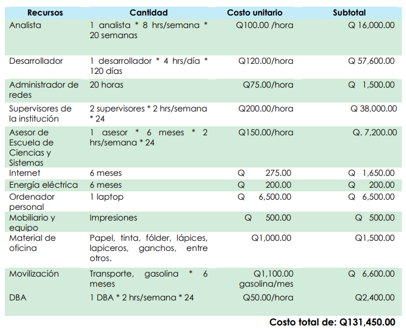

Artículo 8 Sistema de control de marcajes para los empleados del Instituto Nacional de Ciencias Forenses de Guatemala (INACIF)
8.1 Resumen
Como parte del EPS me fue asignado el proyecto que consiste en un diseño para el control de marcaje de los empleados del Instituto Nacional de Ciencias Forenses de Guatemala (INACIF); dicho proyecto fue desarrollado utilizando diferentes tecnologías, entre ellas el uso de contenedores. La aplicación permite la administración de los biométricos con los que cuenta el instituto como la opción para generar reportes a partir de los datos que se van guardando en estos dispositivos.
8.2 Introducción
Desde el inicio de sus funciones en el año 2007, el INACIF ha buscado ser una Institución referente dentro del sector justicia de Guatemala. Como parte del fortalecimiento institucional, en el año 2010 se adquirieron dispositivos biométricos con su respectivo Software de control. Lamentablemente este se quedaba corto con las necesidades reales de la Unidad de Recursos Humanos, por lo cual se decidió la creación de un nuevo sistema que permite el control de los marcajes de los empleados, el cual se describe en este artículo con sus características principales.
8.3 Artículo
8.3.1 Huellas dactilares
Para comprender el funcionamiento de los sistemas biométricos debe conocerse la definición de huellas dactilares. La Real Academia Española define huella dactilar como la impresión que suele dejar la yema del dedo en un objeto al tocarlo, o la que se obtiene impregnándola previamente en una materia colorante.
8.3.2 Una breve historia sobre la biometría en huellas dactilares
Hallazgos arqueológicos indican que las huellas dactilares se han venido utilizando para la identificación de individuos. Cabe mencionar que los más destacados son los restos de cerámica en arcilla con impresiones de huellas dactilares, que adicionalmente ayudaba a identificar el alfarero; en otras culturas como la china, presentan también sellos estampados con la huella del firmante. Sin embargo, es importante mencionar que, aunque en la época las huellas distinguían a los individuos, no existe evidencia de que estas se usaran como base universal para la identificación en ninguna de aquellas sociedades.
8.3.3 Biometría
Para abordar este tema, es importante mencionar que la biometría es usada actualmente en muchas compañías a nivel mundial, con diferentes fines como control de horarios de los empleados, acceso a diferentes sitios y más para identificación de las personas.
El concepto clásico de biometría denota la aplicación de la matemática y estadística al análisis de los datos en la ciencia biológica. Pero en el contexto tecnológico, la biometría es toda aplicación automatizada constituida por técnicas biométricas para la identificación de personas en sistemas de seguridad. Las técnicas biométricas se utilizan para clasificar las características físicas y/o de comportamiento de las personas para obtener su identidad.
8.3.4 Reconocimiento de huellas dactilares
Es uno de los métodos más usados en el mundo por la facilidad que tiene para apoyar los sistemas de seguridad, ya que la autenticación de personas se puede obtener de manera eficaz. La ciencia que estudia los rasgos de las huellas es la dactiloscopia; esta se divide en cuatro grandes rasgos:
- Inmutabilidad: huellas que no son modificadas en el desarrollo físico de una persona.
- Perennidad: reconoce que las personas desde los seis meses tienen huellas dactilares.
- Variedad: huellas únicas en los individuos.
- Clasificación: recopilación de información de bases de datos de aplicaciones con fines de control de acceso para la consulta de diferentes plantillas de huellas.
Los dactilogramas están compuestos por tres zonas: marginal, nuclear y bacilar. A continuación, se muestran los diferentes tipos de delta que pueden ser encontrados en las huellas dactilares.
Figura 8.1: Deltas negros [Beavan, C (2003.) Huellas dactilares]
Figura 8.2: Deltas blancos [Beavan, C (2003.) Huellas dactilares].
8.3.5 Objetivos del proyecto
8.3.5.1 Objetivo general
Implementar una aplicación web para el control de marcajes de los empleados del Instituto Nacional de Ciencias Forenses de Guatemala (INACIF) en el departamento de Recursos Humanos.
8.3.5.2 Objetivos específicos
- Desarrollar interfaces para la integración de los lectores biométricos de huellas dactilares que dispone la institución, contra aplicaciones de control de acceso.
- Codificar el sistema para el control de ingreso y salida mediante la autenticación biométrica del usuario (lector de huella dactilar).
- Proveer a los usuarios correspondientes, la información condensada del historial de marcaje de los empleados del INACIF.
8.3.6 Descripción del proyecto
El proyecto consiste en implementar una herramien- ta administrativa que permita garantizar la prestación del servicio en las diferentes dependencias del INACIF; esto por medio del registro, control y seguimiento de marcajes de los empleados de acuerdo con el rol de turnos establecidos por las diferentes áreas. Al madurar este sistema se podrán obtener indicadores de control como parte de los procesos de evaluación del desempeño. Este sistema también alimentará a las herramientas de inteligencia de negocios y sistemas de evaluación del desempeño.
La aplicación dispone de una interfaz para realizar la conexión con los dispositivos biométricos que permiten extraer los datos que se almacenan dentro del dispositivo, para posteriormente procesar la información. También se cuenta con una aplicación web desde donde se puede administrar y manipular el sistema.
Los módulos identificados a desarrollar son los siguientes:
- Control de sesión
- Administración de usuarios
- Registro de horas
- Horarios laborales
- Administración de dispositivos
- Configuración del software
- Administración de empleados
- Reportes
- Ausencias
A continuación, se incluye un diagrama de contexto.
Figura 8.3: Diagrama de casos UML que muestra los módulos del sistema. Fuente: elaboración propia
8.3.7 Presentación de la solución del proyecto
El proyecto fue realizado utilizando las siguientes herramientas:
- Bases de datos: SQL Server
- Lenguajes de programación: JavaScript y PHP
- Frameworks: Vuejs y Laravel
- Contenedores: Docker
- Proxy: Ngnix
8.3.8 Arquitectura
Para el desarrollo de la aplicación se decidió utilizar contenedores para ser una solución autoescalable y de alta disponibilidad. Existen dos bases de datos, una en donde se encuentra la información del Instituto recopilada durante varios años la cual contiene datos de los empleados, sedes, puestos, números de identificación, entre otros. La otra base de datos es donde se almacena la información que se recopila de los biométricos y que utiliza la aplicación web.
Figura 8.4: Diagrama de la arquitectura de la aplicación. Fuente: elaboración propia
Figura 8.5: Diagrama de la base de datos. Fuente: Elaboración propia
8.3.9 Beneficios del proyecto
Al implementar un sistema informático, erróneamente, no se sabe transmitir su resultado algunas veces. Este, en pocas palabras, es reducir costos y llegar a ser más productivos. Además de esto se tendrá una base sólida para un crecimiento sostenible. El proyecto apoyará en diferentes áreas al Instituto Nacional de Ciencias Forenses de Guatemala. Las áreas de mayor importancia son:
8.3.9.1 Área de Recursos Humanos
Mayor facilidad de procesamiento de datos para la generación de reportes;también centralización de información generada, traslados de datos de lostrabajadores entre las distintas sedes, cambios de horarios, asuetos por días festivos, permisos y muchas más funcionalidades.
8.3.9.2 Área administrativa
Se verá impactada económicamente, ya que no se tendrá un gasto en cuanto a papel, suministros y capacidad humana para dotar al área de archivo, a pesar de que se tendrá que incurrir en gastos para comprar los insumos tecnológicos y recurso humano.El área de archivo va a poder crecer (de manera electrónica) sin mayor gasto y a largo plazo el gasto será menor.
8.3.9.3 Empleados del INACIF
Al contar con un sistema centralizado los empleados pueden obtener reportes más certeros acerca del tiempo que pasan laborando dentro de la Institución; también ayuda a que conozcan cuál es su estado para evitar alguna llamada de atención por marcar tarde. El sistema permite generar reportes para conocer el estado de marcaje de los empleados de cualquier subsede que cuente con un dispositivo biométrico para realizar el marcaje correspondiente.
8.3.9.4 Costos del proyecto
La siguiente tabla muestra los costos con los que el proyecto tendría una equivalencia directa en el mercado:
 Tabla 8.1: Descripción de los costos del proyecto
8.4 Conclusiones
- Se desarrolló una interfaz que permite la comunicación entre los lectores biométricos de huellas dactilares que dispone la institución con la aplicación que se codificó.
- Se codificó un sistema basado en arquitectura web que permite la gestión de marcajes de los empleados del Instituto Nacional de Ciencias Forenses de Guatemala.
- Se condensó y resumió todo tipo de información para el control de marcaje, de tal manera que se puede acceder a toda esta información a través de una vista dentro del sistema.
8.5 Referencias
[1] [«Beavan, C. Huellas dactilares.»]((https://www.popularlibros.com/), [Los orígenes de la dactiloscopia y de la ciencia de la identificación criminal. Editorial Alba] (https://www.popularlibros.com/libro/huellas-dactilares_178047), 2003. [En línea]. Disponible en: https://bit.ly/3hsXkcJ. [Último acceso: 07 noviembre 2020].
[2] «INACIF», Identificación humana forense, 2017. [En línea]. Disponible en: https://bit.ly/3k21pGG. [Último acceso: 05 febrero 2020].
[3] «Oficinas de Programas de Justicia», El libro de referencia de las huellas dactilares. USA: OPJ, 2017. [En línea]. Disponible en: https://bit.ly/3k6Ku5W. [Último acceso: 17 febrero 2020].